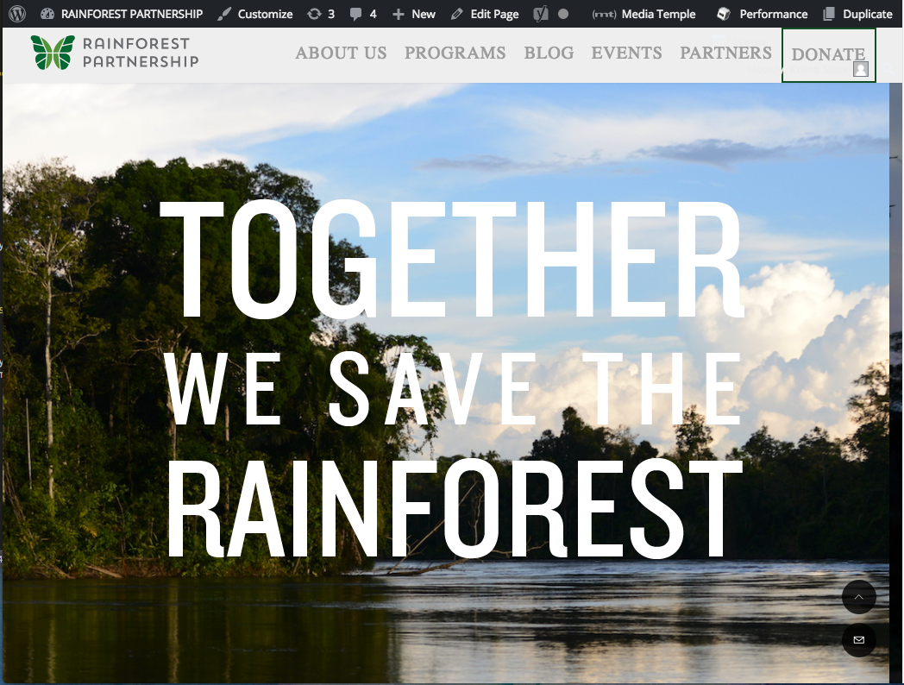
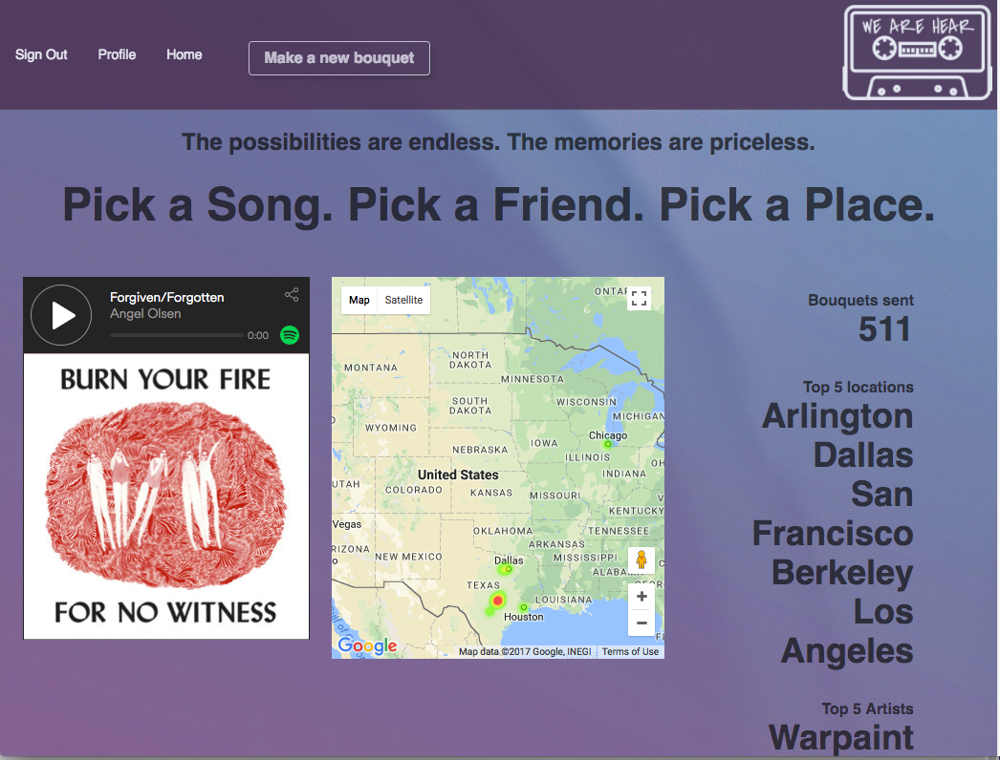
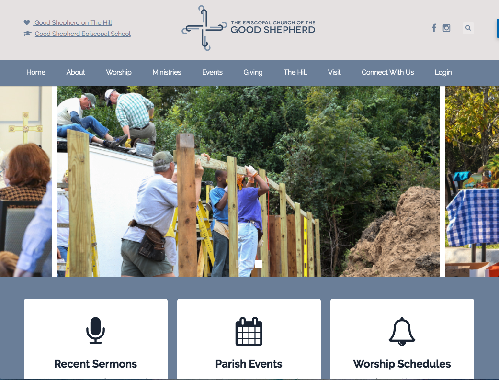

Rainforest Partnership

https://rainforestpartnership.org
Website for global non-profit committed to saving the rainforests
Currently working on making updates to existing Wordpress site, including donate using PayPal feature, and creating Wordpress Divi theme templates for converting site content to new Wordpress site
WeAreHear

https://wearehear.herokuapp.com
Location-based music and memory sharing app
Created with Ruby, Rails, Postgres, HTML, CSS, Tachyons, Javascript, and JQuery;
Implemented Carrierwave gem, Cloudinary CDN, and Twilio API to enable users to send custom texts to friends
Recipe Box

https://recipebox-skippers.herokuapp.com
App that allows users to share, search for, and rate favorite recipes
Created with Ruby, Rails, Postgres, HTML, CSS, Bootstrap, Javascript, and JQuery;
Utilized Devise gem for user authentication; created NavBar; created nested form to allow users to add new recipes with multiple ingredients
Good Shepherd Episcopal Church

http://gsaustin.org
Website for local church allowing them to view informatoin about events, sermons, and worship schedules
Assisted lead UX designer by compiling data from user research, and produced a report on the findings to assist in website redesign